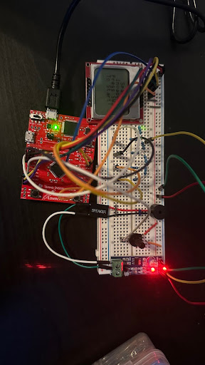

Ultrasonic Walking Cane

By: Nolan Santellanes & Miguel Almejo
Overview: This project was one of our final projects for the semester and its functions was to use a potentiometer to move the ship and
an onboard push button to shoot along with sonund hear the shots and enemies being destroyed
The components used where:
- TM4C123 Microcontroller
- Nokia 5110 LCD Display
- 10K ohm potentiometer
- Speaker
- LM386 Amplifier
- 4 x 2K ohm resistors
- 4 x 4K ohm resistors